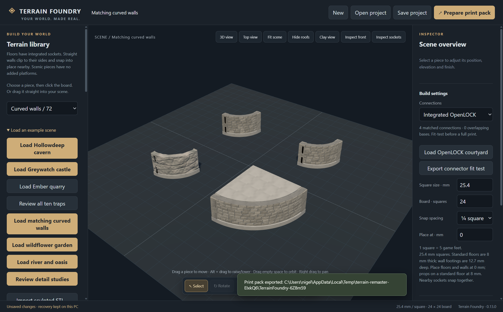
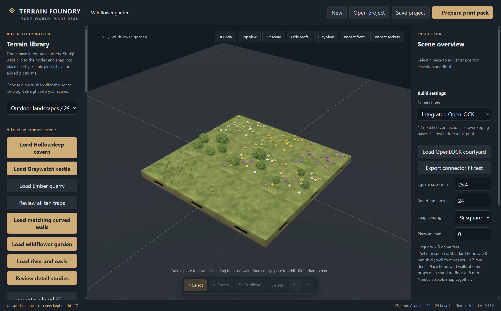

Shape your encounter
Place floors, walls, doors, trees and props. Snap pieces together, move them by dragging, and adjust their elevation. Wide curves and 45° wall sections give your rooms space to breathe.
OPEN SOURCE · OFFLINE · YOURS
A workshop for dungeon masters, world builders and miniature makers. Arrange detailed terrain in 3D, save your scenes on your PC, then prepare the pieces for your 3D printer.
OFFLINE BY CHOICENo login. Your PC. Your files.Once installed with your scenery, build, save and export without an internet connection. No account, no signup and no cloud saves.
Internet is only needed for the initial download, optional updates and online print quotes.The editor runs on your desktop, not in your browser. Your saved scenes stay on your computer; they are not automatically uploaded to us.
Print ordering also needs no Terrain Foundry account. If you choose our online printing service, we retain manufacturing files, contact and delivery details, and order/payment references to quote, print and ship your order. Order status is available through a private link and email, without a login.
PayPal handles checkout. Our application does not receive or store card numbers or card security codes. Read print-service privacy and retention details →
No printer? Upload terrain, Meshy or your own STL model.

DESIGNED ON YOUR DESK.Actual editor view · original modular scenery
THE WORKSHOP
Lay out a ruined keep, a winding cavern or a wildflower clearing. Work at tabletop scale with a library of original scenery.
Place floors, walls, doors, trees and props. Snap pieces together, move them by dragging, and adjust their elevation. Wide curves and 45° wall sections give your rooms space to breathe.
Save editable projects to your computer. Open them offline and keep building. Recovery files help protect work in progress. Updates do not replace your personal projects.
The small launcher downloads the editor and scenery from GitHub. It checks for signed updates when online and reuses unchanged packs. The installed editor works without an internet connection.

BEYOND THE DUNGEON
Meadows, flowers, shrubs and trees. Rivers and bridges. Weathered cave walls and broad stone curves. Original scenery, with sculpted detail that becomes part of the print.
Preview colours and fine material shading are not included in STL files.
FROM SCENE TO TABLE
Export an STL print pack with separate terrain pieces, a quantity list and your editable project. Open the STLs in Bambu Studio, choose your printer and material, then inspect supports and sliced layers.
OpenLOCK is by Printable Scenery. MGN Consultancy holds a commercial BSD licence for the OpenLOCK system. That licence is specific to MGN Consultancy; it does not grant commercial rights in other designers’ models. Our scenery uses official Printable Scenery templates. MGN Consultancy can provide commercial printing under its licence; other users should see our component licence details. Print the supplied fit test first; physical fit is not yet verified.
3D PRINTING SERVICE
Terrain Foundry scenery, a Meshy creation or your own 3D design: upload your model and get a clear price for a single-colour PLA or PETG print, delivered in the UK.
Print it for me →Upload a model · Choose material & colour · Get a quote
Check availability below. Uploading requests a quote; payment is a separate step. Any explicitly labelled test payment never triggers printing or shipping.
Models are checked for size and closed geometry. Some AI-generated models need repair before they can be quoted. No Terrain Foundry account needed. Orders use a private link and email. We store the files and details needed to quote, print and deliver your order; files are not published. Privacy details. These are geometry estimates, subject to slicing review.
Dispatch allowance: 24 hours before printing starts, plus printing time, plus a further 24 hours for handling. Delivery time is additional. We will contact you if a model needs repair or the schedule changes.
Have a filament-only code? You pay the estimated filament cost only: machine time, handling and UK postage are waived.
YOUR NEXT ADVENTURE STARTS HERE
Build, save and export on your PC with no internet connection. Download the editor and scenery once; connect again only for optional updates or online print services.
The source is public on GitHub. The first signed Windows release is being verified; its download link will appear here when published.
Windows 10/11 · Runs offline after installation · No account required
Release installers must carry a verified MGN CONSULTANCY LIMITED publisher signature.